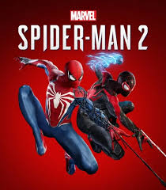
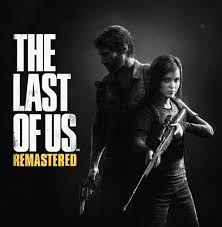
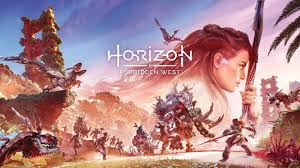
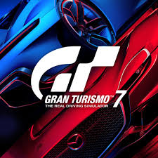

O que são exclusivos?
Os exclusivos da PlayStation são jogos desenvolvidos por estúdios da Sony ou em parceria com a empresa, disponíveis apenas nas consolas PlayStation.
Ao longo dos anos, a PlayStation ficou conhecida por ter alguns dos melhores jogos da indústria, com histórias envolventes e gráficos incríveis.
Principais exclusivos
- Marvel's Spider-Man 2
- God of War Ragnarök
- The Last of Us Part II
- Horizon Forbidden West
- Gran Turismo 7
Jogos exclusivos





Estes jogos destacam-se pela qualidade e são considerados alguns dos melhores da PlayStation.